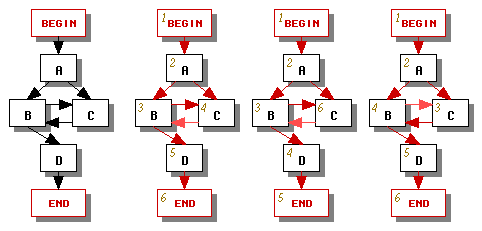
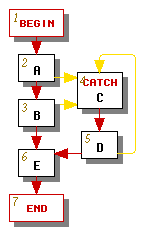
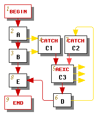
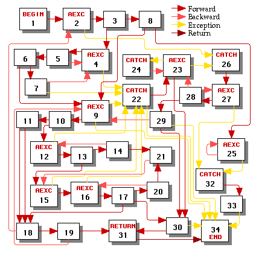
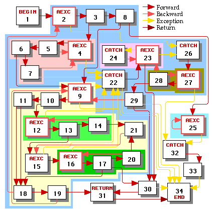
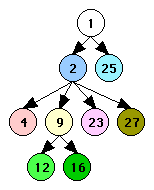

Electrical FireDesignPrimitive Graph FormatControl LayerControl Edge Details |
|
Control flow edges chart possible paths of execution through a set of control nodes. Let us now take a look at several useful graph-theoretical definitions as well as the procedure for designating which control flow edges are forward edges and which are backward edges.
A cycle is any control flow path A -> N1 -> N2 -> ... -> Nn-1 -> A that starts and ends at the same control node and contains at least one edge. A cycle is not necessarily a loop; we use the term loop in a more specialized way.
A control node B is reachable from control node A iff there exists some control flow path A -> N1 -> N2 -> ... -> Nn-1 -> B. In particular, every node is reachable from itself.
A control node A dominates control node B iff every control flow path from begin to B contains A. In particular, every node dominates itself.
A control node A postdominates control node B iff every control flow path from B to end contains A. In particular, every node postdominates itself. Note that, by this definition, if there is no path from B to end then every node postdominates B.
Dominators and postdominators can be computed easily using the general dataflow algorithm; see page 671 of [ASU86].
To proceed further we compute a depth-first spanning tree of the control graph by following the algorithm on page 662 of [ASU86] on all edges of the control graph. This algorithm yields the node numbers visible in the control layer nodes.
Ignoring exception and return edges for the moment, we define a forward edge to be any control flow edge whose source node has a number less than the destination node; all remaining control flow edges are backward edges. Backward edges are what [ASU86] calls retreating edges; forward edges are what [ASU86] calls advancing edges and cross edges. We can make several useful observations:
A control graph with only forward edges is connected and acyclic. This graph is connected because every edge in the depth-first spanning tree is a forward edge. It is acyclic because every cycle N0 -> N1 -> N2 -> ... -> Nn-1 -> N0 must include some k such that Nk >= Nk+1. As an immediate corollary:
Every cycle in the control graph includes a backward edge.
We call a backward edge whose target dominates its source a regular backward edge (called a back edge in [ASU86]). All other backward edges are irregular backward edges. Note that, by the construction of the depth-first spanning tree, a forward edge's target cannot dominate its source, so every edge whose target dominates its source is a regular backward edge. Thus, the set of regular backward edges can be defined without making use of the depth-first search and is therefore independent of the choices we make in the depth-first search.
If a control graph is reducible, it contains only regular backward edges (see page 663 of [ASU86]). If the control graph is irreducible, it will include at least one irregular backward edge. The set of irregular backward edges will vary depending on how we choose to traverse the control graph in the depth-first search -- see the three possible traversals in Figure 1 which result in different designations of forward edges (dark red) and backward edges (light red). To avoid inconsistencies we will choose one depth-first traversal and use it consistently throughout the translator's phases.
|  |
| Figure 1 |
|---|
Let us now consider exception edges. We would like all exception edges to behave like forward edges so that constraint CYCLES1 holds; in other words, for each exception edge, we'd like its source's number to be less than its destination's number. If the graph satisfies this property (in practice most will), we're done.
For some graphs, such as the one in Figure 2a, no matter how we conduct our depth-first search we will obtain an exception edge whose source's number is not less than its destination's number. If this happens, we modify the graph by splitting the catch node that is the target of each such exception edge, as shown in Figure 2b, where the catch node C has been split into two catch nodes C1 and C2 followed by an aexc node C3, which is now the loop header.
The graph has been transformed so that the only backward edge is the edge from C2 to C3. If a catch node such as C2 has only one incoming edge, then its depth-first number must necessarily be greater than its predecessor's number, so its incoming exception edge behaves like a forward edge. Note that in this example the exception edges pointing to catch node C1 already behaved like forward edges, so it was not necessary to split node C1 further.
The aexc node C3 must have at least one outgoing exception edge for handling asynchronous exceptions. We create such edges (shown exiting from the right side of node C3) as appropriate.
An end node can also be a target of an exception edge. Fortunately we never have to split the end node because the end node has no successors, so every edge pointing to the end node behaves like a forward edge.
|  |  |
| (a) Original | (b) Modified |
| Figure 2 | |
|---|---|
The return edge always has the end node as its target and the end node has no successors, so the return edge always behaves like a forward edge.
A control graph is considered to be reducible if it follows certain structured programming coventions. The following are all equivalent definitions of a reducible control graph:
Any control graph that is not reducible is called irreducible. All unoptimized Java source programs yield reducible graphs, although some compiler optimizations might generate irreducible control graphs by the time the Java source is converted to bytecodes.
Given any regular backward edge E with source A and target H, we define the natural loop of E to be the union of {H} with the set of all control nodes N for which there exists a path from N to A that does not include H (see page 604 of [ASU86]). We will refer to node H as the natural loop's header.
Given any node H that is the target of at least one backward edge, we define the loop headed by H to be the union of all natural loops whose headers are H.
Note that not every cycle is a loop. For example, the graph in Figure 1 above does not contain any loops because it has no regular backward edges.
Loops have the nice property that two loops in a graph are either disjoint or one is entirely contained within the other (see page 605 of [ASU86]). Hence, we can classify all loops in a graph into a tree whose leaves are the innermost loops, parents represent loops that contain the loops represented by their children, and whose root represents the entire graph.
Consider the control graph in Figure 3. This graph is irreducible because it contains two entry points (15 and 21) into the cycle 15->16->17->20->21->15 and two entry points (23 and 26) into the cycle 23->26->27->28->23. The depth-first search arbitrarily decided to make control edges 21->15 and 28->23 into irregular backward edges (it could have instead made edge 13->15 into an irregular backward edge had it traversed the nodes in a different order; it could also have tried to make edge 23->26 into an irregular backward edge, which would have required node 26 to be split into two catch nodes and another aexc node).
This graph contains eight loops, each of which is shaded with a different color in Figure 4. The headers of all of the loops are highlighted. Figure 4 also shows the hierarchy of the loops as a tree. By convention the root of that tree is always the begin node, even though that node is never the header of a loop.
Highlights:
|  |
| Figure 3 |
|---|
|  |  |
| Loops of the Control Graph | Loop Hierarchy Tree |
| Figure 4 | |
|---|---|